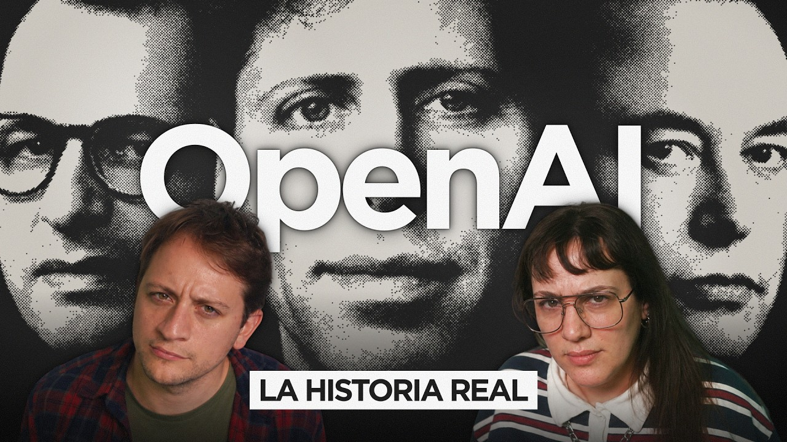

FRENTE AL RUIDO
Todo es Fake
En mayo de 2015, Sam Altman le mandó un mail a Elon Musk. Ese mail fue el principio de todo.
Los Fabricantes: 5 episodios sobre los hombres que prometieron construir IA para el bien de la humanidad y terminaron compitiendo en vivo por el control del futuro.